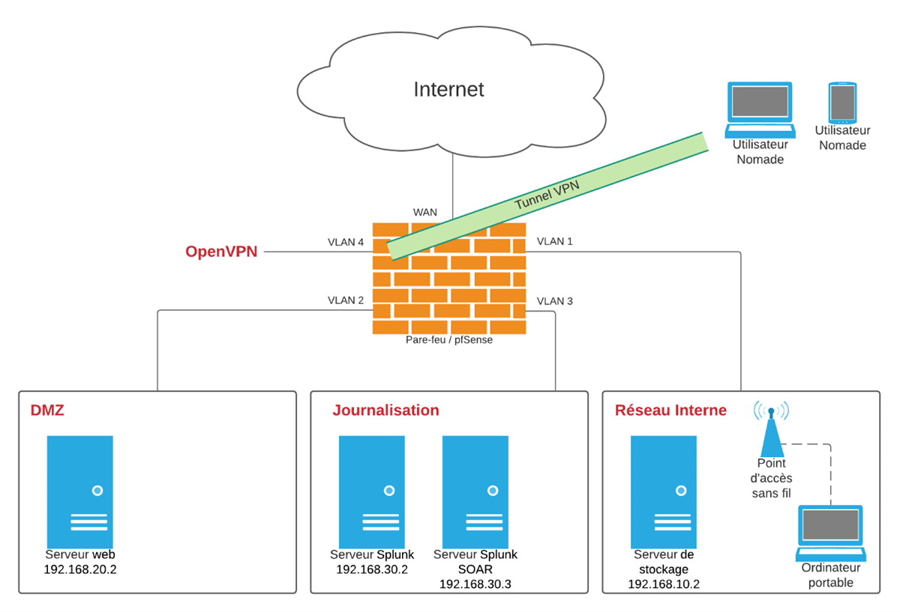

Architecture réseau
Dans le cadre de mon projet de dernière année à l’école des Mines de Nancy, je me suis intéressé à la définition et au déploiement de l’architecture réseau d’un laboratoire informatique sécurisé, mobile et accessible à distance. Les objectifs de ce projet sont les suivants :- Définir et déployer une architecture informatique accessible à distance et permettant de publier des services sur internet.
- Sécuriser l’architecture mise en place.
- Déployer une solution de surveillance des flux réseau afin de détecter les tentatives d’attaque et les contrer.
- Définir et mettre en place un scénario d’attaque permettant de tester la solution déployée.
Cette première publication présente l’architecture réseau que nous avons déployée et les solutions de sécurisation utilisées. Nous détaillerons dans une seconde publication la solution de surveillance de l’activité réseau que nous avons mise en œuvre afin de détecter et de contrer certaines attaques informatiques. Nous verrons finalement dans un dernier article dans quelle mesure il est possible d’utiliser la solution que nous avons construite afin de repérer et bloquer une attaque de type log4shell. Cette attaque utilise des vulnérabilités découvertes récemment dans la bibliothèque de journalisation log4j.
La première étape du projet a été de définir l’architecture réseau du laboratoire qui sera utilisée comme environnement de test afin de déployer et de tester une solution de détection et de blocage d’attaques informatiques.
Voici un schéma simplifié de l’architecture de réseau que nous avons retenue :
 En réalité, l’ensemble du réseau et des serveurs qui y sont connectés sont virtualisés. Pour cela, nous avons utilisé la solution de virtualisation proxmox que nous avons déployée sur une machine Intel NUC.
Le point central de notre architecture réseau correspond au pare-feu pfSense qui permet de filtrer tous les flux entrant et sortant du réseau interne. Afin de limiter les attaques, il est nécessaire de définir des règles qui limitent à l’indispensable les flux autorisés. Cet outil nous permettra d’interdire les flux liés à une adresse IP malveillante afin de bloquer une exfiltration de données par exemple.
En complément du déploiement d’un pare-feu, nous avons mis en place une segmentation du réseau local, c’est-à-dire que nous avons divisé le réseau interne en plusieurs sous-réseaux. Cela permet de contrôler et de filtrer les flux entre les différents sous-réseaux de l’architecture que nous avons définie :
- La zone démilitarisée (ou DMZ) correspond au sous-réseau dans lequel sont hébergés les services exposés et accessibles depuis internet. Par exemple dans notre cas, nous y avons placé un serveur web Apache sur lequel nous pourrons simuler une attaque de type log4shell provenant de l’extérieur.
Cette zone permet de limiter les possibilités de rebonds vers les serveurs sensibles hébergés dans les autres sous-réseaux en cas de compromission de l’un des serveurs exposés sur internet.
- L’interface OpenVPN reçoit les connections des utilisateurs nomades qui souhaitent accéder aux ressources internes. Pour cela des règles de filtrage correspondantes sont mises en place au niveau du pare-feu afin d’autoriser le trafic vers le sous-réseau interne.
- Le sous-réseau interne héberge les serveurs de données et un point d’accès permettant aux utilisateurs internes d’accéder aux ressources hébergées localement.
- Finalement, les serveurs de surveillance de l’activité du réseau sont placés dans un sous-réseau différent dans la mesure où ils ne doivent pas être accessibles depuis internet ou par les utilisateurs internes.
Les rôles des différentes machines que nous avons déployées dans notre réseau sont résumés dans le tableau synoptique ci-dessous :
 Afin de réduire la surface d’attaque sur les différents serveurs,
nous avons mis en place un processus de durcissement. Ce dernier
repose sur l’idée que tout outil installé sur une machine
représente une source potentielle de vulnérabilité. Cette
stratégie de défense consiste ainsi à réduire à l’indispensable
les services et les outils installés sur chaque système
informatique.
Afin de réduire la surface d’attaque sur les différents serveurs,
nous avons mis en place un processus de durcissement. Ce dernier
repose sur l’idée que tout outil installé sur une machine
représente une source potentielle de vulnérabilité. Cette
stratégie de défense consiste ainsi à réduire à l’indispensable
les services et les outils installés sur chaque système
informatique.
La limitation des possibilités d’attaques passe également par une configuration adéquate des outils utilisés. En effet les erreurs de configuration représentent un point d’entrée pour de nombreuses attaques informatiques.
Afin de surveiller le réseau, nous avons décidé d’utiliser les solutions développées par l’entreprise Splunk en déployant dans notre réseau un serveur splunk et un serveur splunk SOAR. Ces outils permettent de détecter des tentatives d’attaques contre le réseau en analysant les fichiers de journalisation stratégiques. Par ailleurs, ils ont l’avantage d’offrir la possibilité d’automatiser les tâches d’analyse d’alerte et de réponse à incident.
Le processus de surveillance que nous avons mis en place sera détaillé dans le prochain article publié au cours du mois de janvier 2022.